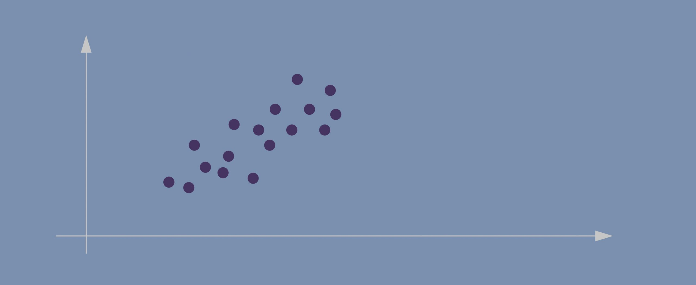
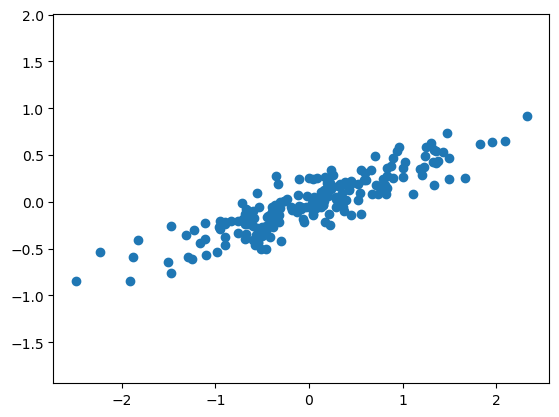
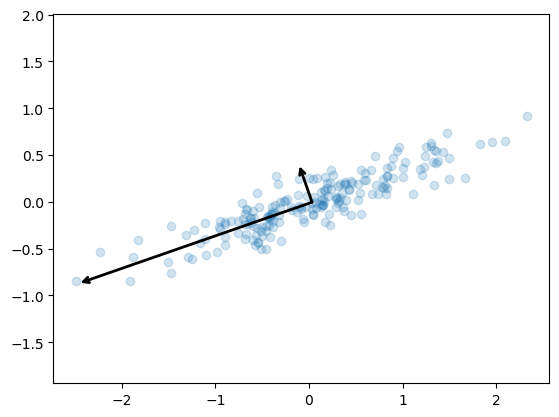
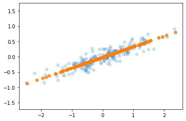
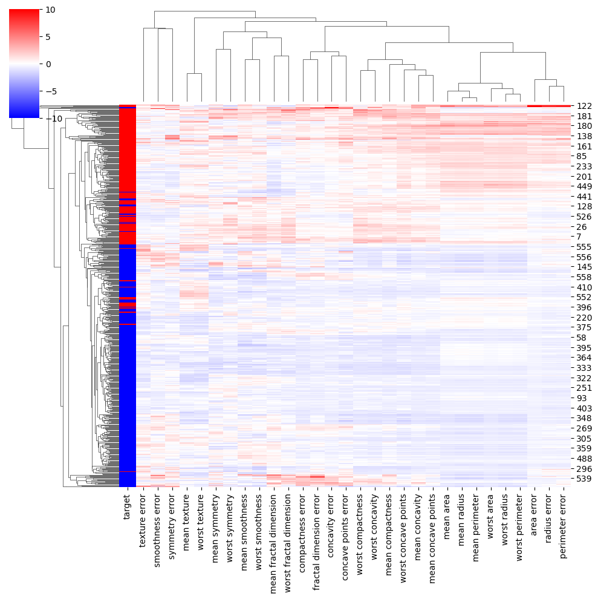
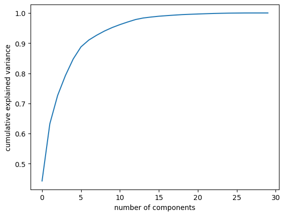
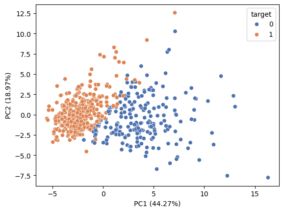

3 Tutorial 3
3.1 Principal Component Analysis
Principal Component Analysis, or PCA for short, is a method for reducing the dimensionality of data.
It can be thought of as a projection method where data with m-columns (features) is projected into a subspace with m or fewer columns, whilst retaining the essence of the original data.
The PCA method can be described and implemented using the tools of linear algebra.
PCA is an operation applied to a dataset, represented by an n x m matrix A that results in a projection of A which we will call B.
By default, PCA creates as many axes as there are dimensions to a given dataset but it ranks these directions, called principal components (PCs), in the order of importance: the first PC always captures the most amount of data variance possible, the second one shows the second-largest amount of variance, and so forth.
After the data has been projected into this new subspace, we might drop out some of the axes and thus reduce dimensionality without losing much important information.
For more details on the steps:
https://machinelearningmastery.com/calculate-principal-component-analysis-scratch-python/
3.1.1 How does PCA work?
- Imagine this is our dataset that we’re trying to cluster; we only have two dimensions.
- If we project the data onto the horizontal axis (our attribute 1) we won’t see much spread; it will show a nearly equal distribution of the observations.
- Attribute 2, obviously, isn’t hugely helpful either.
- Evidently, the data points in our case are spreading diagonally so we need a new line that would better capture this.
- The second PC must represent the second maximum amount of variance; it’s going to be a line that’s orthogonal to our first axis. *Due to PCA’s math being based on eigenvectors and eigenvalues, new principal components will always come out orthogonal to the ones before them.
3.1.1.1 Important!
Before applying PCA, we must ensure that all our attributes (dimensions) are centered around zero and have a standard deviation of 1. The method won’t work if we have entirely different scales for our data.
3.2 Example
https://jakevdp.github.io/PythonDataScienceHandbook/05.09-principal-component-analysis.html
# create and plot some random data
rng = np.random.RandomState(1)
X = np.dot(rng.rand(2, 2), rng.randn(2, 200)).T
plt.scatter(X[:, 0], X[:, 1])
plt.axis('equal');
pca.components_ returns the direction of each principal component, sorted by decreasing explained variance. These are the eigenvectors of the decomposition.
pca.explained_variance_ returns the variance explained by each component, sorted by decreasing magnitude. These are the eigenvalues of the decomposition. They do not sum up to 1.
pca.explained_variance_ratio_ returns the proportion of total variance explained by each component. They sum up to 1. These are computed as:
explained_variance_ratio_[i] = explained_variance_[i] / sum(explained_variance_) To see what these numbers mean, let’s visualize them as vectors over the input data, using the “components” to define the direction of the vector, and the “explained variance” to define the squared-length of the vector.
def draw_vector(v0, v1, ax=None):
ax = ax or plt.gca()
arrowprops=dict(arrowstyle='->',
linewidth=2,
shrinkA=0, shrinkB=0)
ax.annotate('', v1, v0, arrowprops=arrowprops)
# plot data
plt.scatter(X[:, 0], X[:, 1], alpha=0.2)
for length, vector in zip(pca.explained_variance_, pca.components_):
v = vector * 3 * np.sqrt(length)
draw_vector(pca.mean_, pca.mean_ + v)
plt.axis('equal');
These vectors represent the principal axes of the data, and the length of the vector is an indication of how “important” that axis is in describing the distribution of the data—more precisely, it is a measure of the variance of the data when projected onto that axis. The projection of each data point onto the principal axes are the “principal components” of the data.
3.2.1 Dimensional reduction
Using PCA for dimensionality reduction involves zeroing out one or more of the smallest principal components, resulting in a lower-dimensional projection of the data that preserves the maximal data variance.
pca = PCA(n_components=1)
pca.fit(X)
X_pca = pca.transform(X)
print("original shape: ", X.shape)
print("transformed shape:", X_pca.shape)original shape: (200, 2)
transformed shape: (200, 1)The transformed data has been reduced to a single dimension. To understand the effect of this dimensionality reduction, we can perform the inverse transform of this reduced data and plot it along with the original data.
X_new = pca.inverse_transform(X_pca)
plt.scatter(X[:, 0], X[:, 1], alpha=0.2)
plt.scatter(X_new[:, 0], X_new[:, 1], alpha=0.8)
plt.axis('equal');
The light points are the original data, while the dark points are the projected version. This makes clear what a PCA dimensionality reduction means: the information along the least important principal axis or axes is removed, leaving only the component(s) of the data with the highest variance. The fraction of variance that is cut out (proportional to the spread of points about the line formed in this figure) is roughly a measure of how much “information” is discarded in this reduction of dimensionality.
This reduced-dimension dataset is in some senses “good enough” to encode the most important relationships between the points: despite reducing the dimension of the data by 50%, the overall relationship between the data points are mostly preserved.
3.2.2 Example 2: PCA to Speed-up Machine Learning Algorithms
The MNIST database of handwritten digits has 784 feature columns (784 dimensions).
We can break it into a training set of 60,000 examples, and a test set of 10,000 examples.
https://towardsdatascience.com/pca-using-python-scikit-learn-e653f8989e60
/opt/anaconda3/lib/python3.11/site-packages/sklearn/datasets/_openml.py:968: FutureWarning: The default value of `parser` will change from `'liac-arff'` to `'auto'` in 1.4. You can set `parser='auto'` to silence this warning. Therefore, an `ImportError` will be raised from 1.4 if the dataset is dense and pandas is not installed. Note that the pandas parser may return different data types. See the Notes Section in fetch_openml's API doc for details.
warn(# the data consists of images -- there are 70,000 images with 784 dimensions (784 features)
mnist.data.shape(70000, 784)0 5
1 0
2 4
3 1
4 9
5 2
6 1
7 3
8 1
9 4
Name: class, dtype: category
Categories (10, object): ['0', '1', '2', '3', ..., '6', '7', '8', '9']3.2.3 Apply PCA
Notice the code below uses PCA(0.95) for the number of components parameter. This means that scikit-learn will automatically choose the minimum number of principal components such that the cumulative sum of the explained_variance_ratio_ is at least 95%. In other words, the selected components together retain 95% of the total variance present in the original data.
PCA(n_components=0.95)In a Jupyter environment, please rerun this cell to show the HTML representation or trust the notebook.
On GitHub, the HTML representation is unable to render, please try loading this page with nbviewer.org.
PCA(n_components=0.95)
3.3 What do we gain from this?
# let's make a logistic model
from sklearn.linear_model import LogisticRegression
# default solver is incredibly slow so changed to 'lbfgs'
logisticRegr = LogisticRegression(solver = 'lbfgs', max_iter=1000)
# train model
logisticRegr.fit(train_img, train_lbl)LogisticRegression(max_iter=1000)In a Jupyter environment, please rerun this cell to show the HTML representation or trust the notebook.
On GitHub, the HTML representation is unable to render, please try loading this page with nbviewer.org.
LogisticRegression(max_iter=1000)
# predict for multiple observations (images) at once
print(f'Predicted\t{logisticRegr.predict(test_img[0:10])}')
print(f'Observed\t{np.array(test_lbl[0:10])}')Predicted ['0' '4' '1' '2' '4' '7' '7' '1' '1' '7']
Observed ['0' '4' '1' '2' '7' '9' '7' '1' '1' '7']how does changing the amount of variance affect the model?
pd.DataFrame(data = [[1.00, 784, 48.94, .9158],
[.99, 541, 34.69, .9169],
[.95, 330, 13.89, .92],
[.90, 236, 10.56, .9168],
[.85, 184, 8.85, .9156]],
columns = ['Variance Retained',
'Number of Components',
'Time (seconds)',
'Accuracy'])| Variance Retained | Number of Components | Time (seconds) | Accuracy | |
|---|---|---|---|---|
| 0 | 1.00 | 784 | 48.94 | 0.9158 |
| 1 | 0.99 | 541 | 34.69 | 0.9169 |
| 2 | 0.95 | 330 | 13.89 | 0.9200 |
| 3 | 0.90 | 236 | 10.56 | 0.9168 |
| 4 | 0.85 | 184 | 8.85 | 0.9156 |
3.4 Looking at the data a more broadly - pair plot, clustering, ploting PCA
seaborn has some powerful functions for visualisation of the whole dataset
Load the breast cancer dataset. In this dataset features are computed from a digitized image of a fine needle aspirate (FNA) of a breast mass. They describe characteristics of the cell nuclei present in the image.
Index(['mean radius', 'mean texture', 'mean perimeter', 'mean area',
'mean smoothness', 'mean compactness', 'mean concavity',
'mean concave points', 'mean symmetry', 'mean fractal dimension',
'radius error', 'texture error', 'perimeter error', 'area error',
'smoothness error', 'compactness error', 'concavity error',
'concave points error', 'symmetry error', 'fractal dimension error',
'worst radius', 'worst texture', 'worst perimeter', 'worst area',
'worst smoothness', 'worst compactness', 'worst concavity',
'worst concave points', 'worst symmetry', 'worst fractal dimension'],
dtype='object')3.4.1 Pair plot
A pair plot in Seaborn is a grid of scatterplots and histograms showing the pairwise relationships and distributions of multiple variables in a dataset. It can be used to visualize patterns and correlations between variables, identify potential outliers or clusters, and guide further analysis.
3.4.2 Clustermap
A clustermap in Seaborn is a heatmap-like plot that arranges rows and columns of a dataset based on their similarity and creates dendrograms to show hierarchical clustering. It can be used to explore patterns and relationships in high-dimensional data, identify groups or clusters of similar observations, and guide feature selection or dimensionality reduction.
# Ploting the clustermap
lut = dict(zip(all_data['target'].unique(), "rbg"))
row_colors = all_data['target'].map(lut)
# sns.clustermap(z, row_colors=row_colors)
sns.clustermap(z, row_colors=row_colors, vmax=10, vmin=-10, cmap='bwr')
# another way - instead of manualy calculating the z score you can set the z_score arg to 1
# sns.clustermap(data, row_colors=row_colors, z_score=1)/opt/anaconda3/lib/python3.11/site-packages/seaborn/matrix.py:560: UserWarning: Clustering large matrix with scipy. Installing `fastcluster` may give better performance.
warnings.warn(msg)
/opt/anaconda3/lib/python3.11/site-packages/seaborn/matrix.py:560: UserWarning: Clustering large matrix with scipy. Installing `fastcluster` may give better performance.
warnings.warn(msg)
3.4.3 Ploting PCA
pca = PCA().fit(z)
plt.plot(np.cumsum(pca.explained_variance_ratio_))
plt.xlabel('number of components')
plt.ylabel('cumulative explained variance');
X = z
pca = PCA().fit(X)
X_trans = pca.transform(X)
colors = all_data['target']
sns.scatterplot(x=X_trans[:,0], y=X_trans[:,1], hue=colors, palette='deep')
plt.xlabel ('PC1 ({:.2f}%)'.format(100*pca.explained_variance_ratio_[0]))
plt.ylabel ('PC2 ({:.2f}%)'.format(100*pca.explained_variance_ratio_[1]))Text(0, 0.5, 'PC2 (18.97%)')